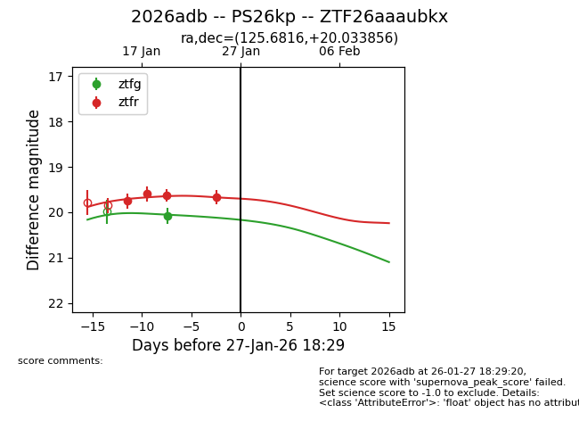
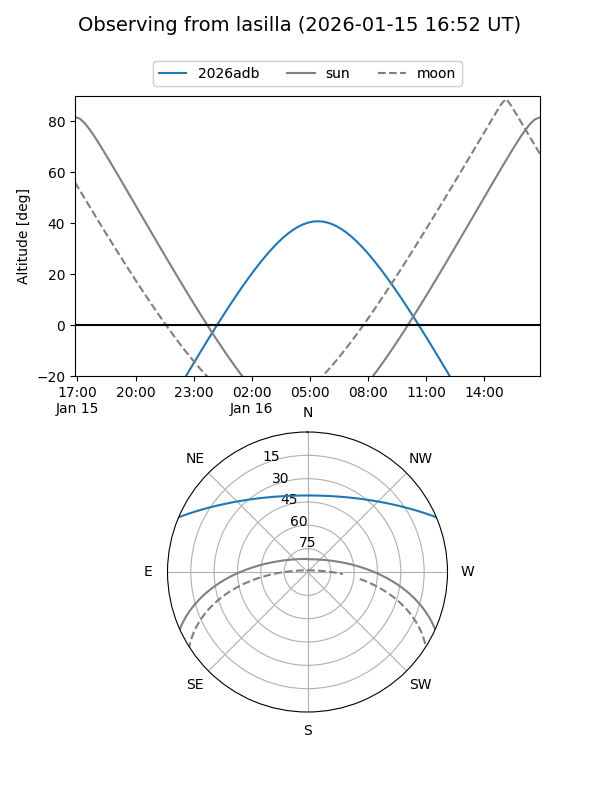
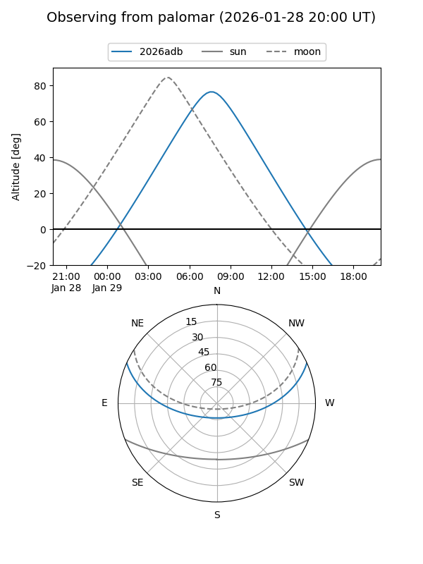

2026adb
Target 2026adb at 2026-01-29 05:46
Aliases and brokers:
FINK: link
Lasair: link
ALeRCE: link
TNS: link
YSE: link
alt names
ZTF26aaaubkx (ztf,fink_ztf)
2026adb (tns,yse)
PS26kp (panstarrs)
Coordinates:
equatorial (ra, dec) = 125.6816,+20.03386
equatorial (HMS+DMS) = 08:22:43.58,+20:02:01.88
galactic (l, b) = (203.8303,+28.71949)
Flags:
Photometry:
last ztfg=20.08, ztfr=19.67
1 ztfg, 4 ztfr detections
Lightcurve

Visibility


Additional plots